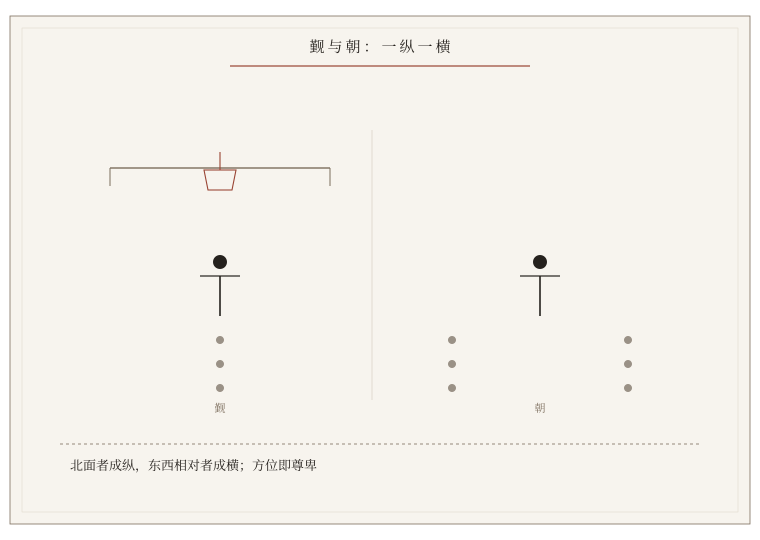

曲礼下 · 二·五十四 · 第 177 课
天子背斧依而立，诸侯北面见天子称「觐」；天子当宁而立，诸公东面、诸侯西面称「朝」。注「诸侯春见曰朝……秋见曰觐……《觐礼》今存，朝、宗、遇礼今亡」。
说什么事：觐与朝之别：一个方位，一种身份。
落在哪一层：礼，兼及礼意。论方位即礼。
为何编在此位：上五节论称号，此节转朝觐之仪。称已备，乃及其行。
【经】天子當依而立，諸侯北面而見天子，曰「覲」。天子當宁而立，諸公東面，諸侯西面，曰「朝」。
【注】諸侯春見曰朝，受摯於朝，受享於廟，生氣文也。秋見曰覲，一受之於廟，殺氣質也。朝者，位於內朝而序進；覲者，位於廟門外而序入。王南面，立於依宁而受焉。夏宗依春，冬遇依秋。春秋時齊侯唁魯昭公，以遇禮相見，取易略也。《覲禮》今存，朝、宗、遇禮今亡。
【疏】此二节论诸侯四时朝、觐、宗、遇之法。「天子当依而立」者，依，状如屏风，以绛为质，高八尺，东西当户牖之间，绣为斧文也，亦曰斧依。故《觐礼》云：「天子设斧依于户牖之间，左右几。天子衮冕，负斧依。」《尔雅》云「牖户之间谓之扆」，郭注云「窗东户西也」。是设依于庙堂户牖之间，天子见诸侯，则依而立，负之而南面以对诸侯也。案《宗伯》：「春曰朝，夏曰宗，秋曰觐，冬曰遇。」郑注：「朝犹朝也，欲其来之早；宗，尊也，欲其尊王；觐之言勤也，欲其勤王之事；遇犹偶也，欲其若不期而俱至。」若通而言之，悉曰朝，从初受名。案《大行人》云，侯服岁壹见，甸服二岁壹见，男服三岁壹见，采服四岁壹见，卫服五岁壹见，要服六岁壹见，随服更来，周而复始。六服分来，又每方服别分为四分，一分朝春，一分宗夏，一分觐秋，一分遇冬。
依 注「状如屏风，画为黼文，高八尺」。亦作「扆」，斧依。
宁 注「门屏之间曰宁」。天子当宁，即立于门屏之间。
觐 郑注「觐之言勤也，欲其勤王之事」。
朝 郑注「朝犹朝也，欲其来之早」。
生气文、杀气质 春见受挚于朝、受享于庙，礼繁而近生；秋见一受于庙，礼简而近质。
天子背斧依而立，诸侯北面见他，这称「觐」。天子当宁而立，诸公东面、诸侯西面，这称「朝」。
此节的关节全在方位。觐是诸侯北面，一人在上，众在下；朝是诸公东面、诸侯西面，两列相对。同是见天子，一个成纵，一个成横。礼用方位写尊卑，比用言语写更准。
第一层 依与宁 依在庙堂户牖之间，是祭祀之所；宁在门屏之间，是视朝之所。天子站在哪一处，礼就变了：一在庙，一在朝。
第二层 觐之勤 郑注四字各有训：朝欲其早，宗欲其尊，觐欲其勤，遇欲其偶。四时之名不是四个日子，是四种期待。礼把「希望诸侯怎样」写进了名字里。
第三层 文与质 春见受挚于朝、受享于庙，两处行礼，其气文；秋见一受于庙，其气质。同一件事，春秋两季的繁简不同。礼不怕不一致，怕的是没有理由。
第四层 礼之存亡 注「《觐礼》今存，朝、宗、遇礼今亡」。四礼之中只存其一，而《曲礼》所记犹在。此一情状最堪玩味：仪亡而文存，后人只能从文字里想见当日之仪。
与今日何干 同一个会议，座位是面对面还是一排对一排，意义完全不同。方位从来不是小事。
| 左 | 右 |
|---|---|
| 当依而立，诸侯北面曰觐 | 依在户牖之间，斧文屏风 |
| 当宁而立，诸公东面曰朝 | 宁在门屏之间 |
| 朝欲其来之早 | 宗欲其尊王 |
| 觐欲其勤王之事 | 遇欲其若不期而俱至 |
| 春见受挚于朝，受享于庙 | 生气文也 |
| 秋见一受于庙 | 杀气质也 |
画两格并排。左格：上方一道横线（示屏风上缘），横线中央悬一枚小斧形（梯形加短柄），斧下画一人形南面而立，其下一列小圆点皆朝上（示诸侯北面，成纵列）。右格：同一人形南面而立，其前左右两列小圆点相对（示诸公东面、诸侯西面，成横列）。两格之间以细竖线分隔。不写文字。赭色只用在左格那枚小斧形。
